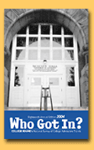

|
 Who Got In? 2004
Brown University
In 2003, our freshman class of 1,426 students is smaller than
in 2002. The class was selected from 15,157 applications, more
than in 2002. We accepted 2,442 students, fewer than in 2002.
We placed about 450 students on our wait list, the same number
as in 2002, and admitted 154 students from the wait list, more
than in 2002. Approximately 116 students transferred to the school,
more than 2002.
Compared to 2002, we admitted
more U.S. minority students than in 2002. About 27 percent of
our student body comes from U.S. minority groups. About 94 percent
of all our students graduate in five years.
Our 2003 yield of accepted
students who actually enrolled was about 58 percent, the same
compared to 2002.
Early and Electronic Admissions
We received 1,871 Early Decision
applications, fewer than last year. About 35 percent of our 2003
first-year class was accepted ED. About 30 percent of students
applied electronically in 2003, more than in 2002. We accepted
261 international students in 2003, the same as in 2002. In 2003,
our average freshman test scores were 1390 combined SAT, 29 ACT.
Financial Info and Programs
More students are requesting more financial aid. The top financial
aid concerns of our students and families are the "financial
aid renewal policy in subsequent years; how does need-blind financial
aid work with the admission process."
About 40 percent of our students
receive financial aid. The average aid package is $27,600. Our
2003-2004 tuition is $29,200.
Financial aid is need-based.
The most popular majors or programs on our campus are: History,
Biological Sciences and International Relations. Among 2004 applicants,
we seek the following special skills or talents: "Strong
academic profile juxtaposed with potential for personal growth
and success."
The most important thing we
want prospective students to know about our school is: "Our
admission process is need-blind; we offer an open liberal arts
curriculum."
High schools can help improve
the admissions process "by communicating with colleges their
students' successes."
Advice and Trends
We advise 2004 applicants to "follow closely the directions
within each application form." Compared to a decade ago,
competition to our college is more competitive. "More students
are applying for limited spaces."
Deadlines
Our deadlines for 2004 admissions
are November 1 for Early Admission and January 1 for Regular
Admission.
Dorothy H. Testa, Associate
Director of Admission, completed the survey. Brown University,
45 Prospect Street, Box 1876, Providence, Rhode Island 02912;
(401) 863-2378; E-mail address, Dorothy-testa@brown.edu; Web
address, www.brown.edu.
Coe College
In 2003, our freshman class of is larger than in 2002. The class
was selected from the same number of applications as in 2002.
We accepted fewer students than in 2002. Approximately the same
number of students transferred to the school than in 2002.
Compared to 2002, we admitted
the same number of U.S. minority students than in 2002. About
6 percent of our student body comes from U.S. minority groups.
About 69 percent of all our students graduate in five years.
Our 2003 yield of accepted
students who actually enrolled was higher compared to 2002.
Early and Electronic Admissions
We received more Early Decision/Early Action applications than
in 2002. About 40 percent of our 2003 first-year class was accepted
ED/EA.
More students applied electronically
in 2003 than in 2002. We accepted the same number of international
students in 2003 than in 2002. In 2003, our average freshman
test scores were 1130 combined SAT, 24 ACT.
Financial Info and Programs
More students are requesting financial aid. The top financial
aid concerns of our students and families are the "increase
in loan amounts and decrease in 'gift aid'"
About 94 percent of our students
receive financial aid. The average aid package is $20,500. Our
2003-2004 tuition is $21,280.
The most popular majors or
programs on our campus are: Business, Biology, Psychology, and
English.
Advice and Trends
Among 2004 applicants, we seek the following special skills or
talents: "Interest in extra-curricular involvement on campus."
The most important thing we
want prospective students to know about our school is: "Liberal
Arts Education with a required practicum experience." The
following college guide books most accurately describe our institution:
Barron's Best Buys in College Education.
High schools can help improve
the admissions process by "standardizing GPA's across the
country."
In 2003 we spotted the following
admission trends: "Students staying closer to home."
We advise 2004 applicants to "visit as many colleges as
possible and seek out scholarship information." Compared
to a decade ago, competition to our college is more competitive.
Deadlines
Our deadline for 2004 admissions is December 10 for Early Admission
and March 1 for Regular Admission.
John Sullivan, Executive
Director of Admission and Financial Aid, completed the survey.
Coe College, 1220 First Avenue NE, Cedar Rapids, Iowa 52402;
(319) 399-8500; E-mail address, jsulliva@coe.edu; Web address,
www.coe.edu.
Saint Louis University
In 2003, our freshman class of 1,399 students is smaller than
in 2002. The class was selected from 6,412 applications, more
than in 2002. We accepted 4,503 students, more than in 2002.
Approximately 402 students transferred to the school, more than
2002.
Compared to 2002, we admitted
more U.S. minority students than in 2002. About 15 percent of
our student body comes from U.S. minority groups. Our retention
rate for minority students is about 84 percent. About 68 percent
of all our students graduate in five years.
Our 2003 yield of accepted
students who actually enrolled was about 31 percent, lower compared
to 2002.
Early and Electronic Admissions
About 1,902 students applied
electronically in 2003, more than in 2002. We accepted 64 international
students in 2003, fewer than in 2002. In 2003, our average freshman
test scores were 1200 combined SAT, 26.1 ACT.
Financial Info and Programs
More students are requesting
more financial aid. The top financial aid concerns of our students
and families are "affording the rising cost of education,
year after year." Our 2003-2004 tuition is $22,050.
The most popular majors or
programs on our campus are: Pre-Med, Biology, Psychology, Business,
and Aviation. The new majors or programs are: B.A. in Women's
Studies and Pre-PA (Physician Assistant) Scholars Program. Among
2004 applicants, we seek the following special skills or talents:
"Commitment to community service, strong leadership skills."
The most important thing we
want prospective students to know about our school is: "Strong
Catholic Jesuit identity; over 80 rigorous academic programs;
a beautiful urban campus." The following college guide book
most accurately describes our institution: Peterson's.
High schools can help improve
the admissions process by "just continuing to inform students."
In 2003, we spotted the following
admission trends: "Students applying to more schools. Students
depositing at many schools."
We advise 2004 applicants to
"follow deadlines and visit college campuses." Compared
to a decade ago, competition to our college is much more competitive.
Deadlines
Our deadline for 2004 admissions is December 1 for Scholarships
and Rolling (August 1 of senior year) for Regular Admission.
Shani Lenore, Director of
Undergraduate Admission, completed the survey. Saint Louis University,
DuBourg Hall 119, 221 N. Grand Boulevard, St. Louis, Missouri
63103; (314) 977-3415; E-mail address, lenores1@slu.edu ; Web
address, www.slu.edu.
|